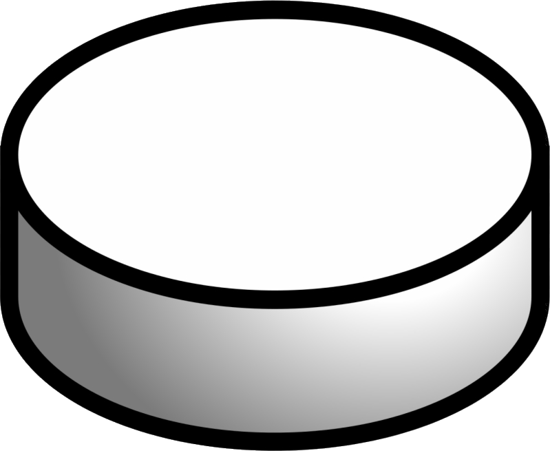
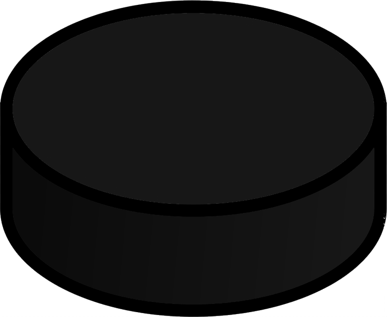
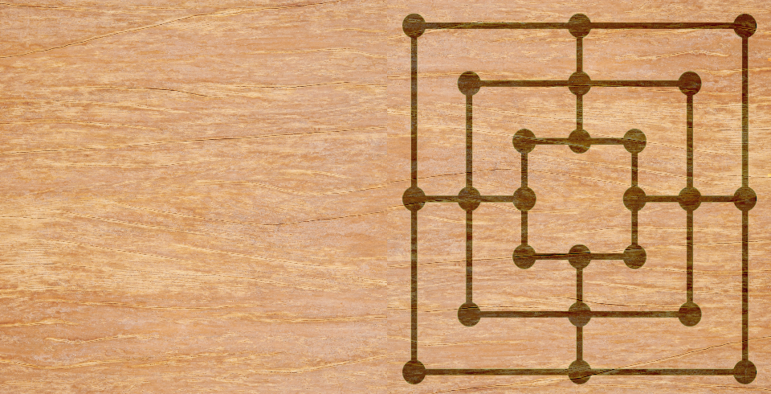
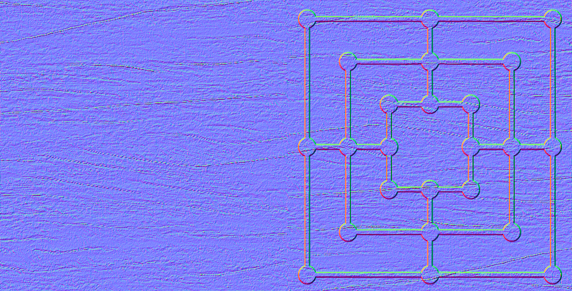

Wooden Games : Nine Men's Morris
Trackball Bounds
Disable normal
Game Details and Instructions:
Active Player:
Phase:
Pieces left to place:


Description:
Interactions
Left Button: Interact with the scene
Right Button: Rotate scene
Mid Button: Zoom in/out scene
Directional Buttons: Pan
 